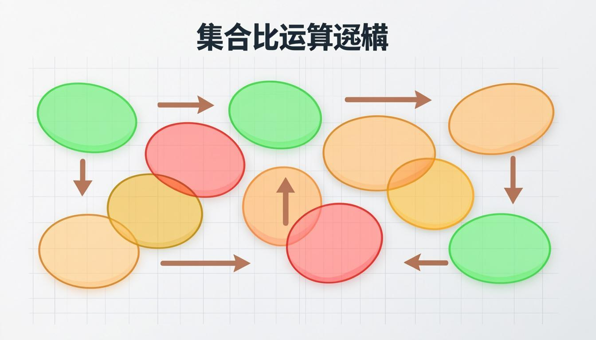

سه عمل اصلی با نمودار ون، فرمول طلایی n(A∪B) و مسائل کلامی تیمها و شمارندهها

سه عمل اصلی روی مجموعهها با نمودار ون؛ فرمول طلایی n(A∪B) و مسئلههای کلامی تیمها و دستهها — همراه ۹ مثال حلشده و ترفندهای ترجمهٔ صورت سؤال به نماد
نمودار ونفرمول n(A∪B)۸ مثال حلشدهجدول ترجمهٔ سؤال
کتابهای درسی پایه نهم · سال ۱۴۰۵–۱۴۰۶منبع: chap.sch.ir
🎯 اهداف یادگیری
اشتراک، اجتماع و تفاضل دو مجموعه را تعریف و با نمودار ون نمایش دهید.
برای هر مجموعه، عضوهای A∩B و A∪B و A−B را بنویسید.
فرمول n(A∪B) = n(A) + n(B) − n(A∩B) را در مسائل به کار ببرید.
صورت سؤالهای کلامی («هر دو»، «حداقل یکی»، «فقط») را به نمادهای فصل ترجمه کنید.
🧭 پیشنیازها
زیرمجموعه و برابری (درس ۲)
رسم نمودار ون و قرار دادن عضوها
قرارداد n(A) برای تعداد عضوها
اشتراک دو مجموعه در نمودار ون: ناحیهٔ میانی زرد، عضوهای مشترک
۱) اشتراک؛ عضوهای مشترک دو مجموعه
اشتراک دو مجموعهٔ A و B مجموعهای است شامل همهٔ عضوهایی که هم عضو A و هم عضو B هستند؛ نماد آن A∩B است و بهصورت «A اشتراک B» خوانده میشود. در نمودار ون، ناحیهٔ هاشورخوردهٔ مشترک دو دایره این مجموعه را نشان میدهد. به زبان مجموعهها: A∩B = {x | x∈A و x∈B}.
✏️ مثال ۱ — اشتراک دو مجموعهٔ عددی
A = {1,2,3,4,5,8} و B = {3,4,5,6,7}. A∩B را بنویسید.
حل گامبهگام:
عضوهای مشترک دو مجموعه: ۳، ۴ و ۵؛ پس A∩B = {3,4,5}. هیچ عضو دیگری هم در A هست هم در B.
توجه: عضوهای ۱ و ۲ و ۸ فقط در A و عضوهای ۶ و ۷ فقط در B هستند.
💡 نکته
اگر دو مجموعه عضو مشترک نداشته باشند، اشتراکشان مجموعهٔ تهی است: A∩B = ∅. مثلاً {عددهای زوج} و {عددهای فرد طبیعی} اشتراک تهی دارند.
۲) اجتماع؛ عضوهای حداقل یکی از دو مجموعه
اجتماع دو مجموعهٔ A و B مجموعهای است شامل همهٔ عضوهایی که حداقل در یکی از دو مجموعه هستند؛ نمادش A∪B و خوانش «A اجتماع B». مهمترین نکتهٔ امتحانی: عضو مشترک را فقط یکبار مینویسیم؛ چون عضوهای مجموعه متمایزند. به زبان مجموعهها: A∪B = {x | x∈A یا x∈B}.
✏️ مثال ۲ — اجتماع همان دو مجموعه
برای A = {1,2,3,4,5,8} و B = {3,4,5,6,7} اجتماع را بنویسید و n(A∪B) را حساب کنید.
حل گامبهگام:
همهٔ عضوهای هر دو مجموعه بدون تکرار: A∪B = {1,2,3,4,5,6,7,8}؛ پس n(A∪B) = 8.
کنترل با فرمول: n(A)=6 و n(B)=5 و n(A∩B)=3؛ پس 6+5−3 = 8 ✓
اجتماع دو مجموعه: کل ناحیهٔ دو دایره؛ عضو مشترک یکبار شمرده میشود
۳) فرمول طلایی شمارش عضوها
از قرارداد n(A) برای «تعداد عضوهای A» استفاده میکنیم. چون عضوهای مشترک در جمعِ n(A)+n(B) دو بار شمرده میشوند، برای شمردن اجتماع باید اشتراک را یکبار کم کنیم:
🚀 ترفند طلایی
n(A∪B) = n(A) + n(B) − n(A∩B) — پرتکرارترین فرمول فصل در آزمونهای نهایی؛ در مسائل کلامی، اول n مشترک را پیدا کنید، بعد جایگذاری کنید.
✏️ مثال ۳ — مسئلهٔ دو تیم ورزشی
در یک کلاس، سامان، احسان، کسرا، علی و رضا عضو هر دو تیم والیبال (V) و فوتبال (F) هستند. فرشید و حسین فقط والیبال و محمد، حسن، کیوان و سبحان فقط فوتبال بازی میکنند. n(V)، n(F) و n(V∩F) را بیابید و با فرمول n(V∪F) را حساب کنید.
حل گامبهگام:
n(V) = 5 مشترک + 2 فقط والیبال = 7؛ n(F) = 5 مشترک + 4 فقط فوتبال = 9؛ n(V∩F) = 5.
n(V∪F) = 7 + 9 − 5 = 11؛ یعنی ۱۱ دانشآموز دستکم در یکی از دو تیماند. کنترل: 5 مشترک + 2 + 4 = 11 ✓
⚠️ خطای رایج
در مسئلههای کلامی، «عضو هر دو تیم» همان n(A∩B) است — مستقیم از متن سؤال. اگر خودتان ۲ به آن اضافه یا کم کنید، کل فرمول خراب میشود.
۴) تفاضل؛ عضوهای «فقطِ» یک مجموعه
تفاضل A−B مجموعهای است شامل عضوهایی که در A هستند ولی در B نیستند؛ به زبان مجموعهها: A−B = {x | x∈A و x∉B}. در نمودار ون، بخشی از دایرهٔ A که بیرون از B است. همینطور B−A یعنی عضوهای «فقط B». چون جهت دارد، A−B با B−A برابر نیست (مگر دو مجموعه برابر باشند).
تفاضل جهتدار: ناحیهٔ زرد فقط عضوهای A است که در B نیستند (A−B)
✏️ مثال ۴ — تفاضل در مسئلهٔ تیمها
در مثال دو تیم، V−F و F−V را بنویسید و معنا کنید.
حل گامبهگام:
V−F = {فرشید، حسین} یعنی «فقط والیبالبازها»؛ F−V = {محمد، حسن، کیوان، سبحان} یعنی «فقط فوتبالبازها».
نکتهٔ زیبا: n(V∪F) = n(V−F) + n(F−V) + n(V∩F) = 2+4+5 = 11؛ اجتماع از سه ناحیهٔ جدا ساخته میشود.
✏️ مثال ۵ — تفاضل عددها
A = {a,b,c,d,e,k} و B = {c,d,k,f,s,t}. A−B و B−A را بنویسید.
حل گامبهگام:
A−B = {a,b,e} (در A هست، در B نیست) و B−A = {f,s,t} (در B هست، در A نیست).
مشترکها c و d و k در هیچ تفاضلی نمیآیند؛ آنها A∩B = {c,d,k} هستند.
۵) ترجمهٔ صورت سؤال به نماد؛ کلید حل مسئلههای کلامی
واژهٔ صورت سؤال
نماد ریاضی
مثال
هر دو / هم … هم …
A∩B
دانشآموزانی که هر دو درس را پاس کردند
حداقل یکی / دستکم یکی
A∪B
دستکم در یکی از دو تیم عضو است
فقط
A−B یا B−A
فقط در تیم والیبال بازی میکند
مشترک
A∩B
شمارندههای مشترک دو عدد
هیچ عضو مشترکی ندارد
A∩B = ∅
دو گروه بدون همپوشانی
✏️ مثال ۶ — شمارندههای مشترک
مجموعهٔ A شمارندههای ۱۲ و B شمارندههای ۱۸ باشند. A و B و A∩B و A∪B را بنویسید.
در کلاسی ۲۰ نفر عضو گروه سرود و ۱۵ نفر عضو گروه تئاتر هستند و ۶ نفر در هر دو گروهاند. چند دانشآموز دستکم در یکی از دو گروه فعالیت میکند؟
حل گامبهگام:
n(سرود∪تئاتر) = 20 + 15 − 6 = 29 نفر.
اگر بخواهیم «فقط سرودخوانها»: 20 − 6 = 14 و «فقط تئاتریها»: 15 − 6 = 9.
✏️ مثال ۸ — خواندن نمودار ون
در نمودار ون، عضوهای A = {1,2,3,4,5,9} و B = {3,5,7,9,15} و C = {1,7,10,11} نوشته شده است. مجموعههای A∩B و C−B و (A−C)∪(B−C) را بنویسید.
حل گامبهگام:
A∩B = {3,5,9}؛ C−B = {1,10,11} (۷ عضو B است و حذف میشود).
A−C = {2,3,4,5,9} و B−C = {3,5,9,15}؛ اجتماع آنها = {2,3,4,5,9,15}.
🎓 راهنمای تدریس (معلم و اولیا)
پیشنهاد تدریس ۴ جلسهای: جلسهٔ ۱ اشتراک و اجتماع با دو طناب دایرهای در حیاط مدرسه (دانشآموزان جابهجا میشوند و ناحیهها را نشان میدهند)؛ جلسهٔ ۲ تفاضل با مسئلهٔ تیمهای واقعی کلاس و ساختن جدول سهناحیهای؛ جلسهٔ ۳ فرمول n(A∪B) با مسائل شمارش و بازی «حدس n مشترک»؛ جلسهٔ ۴ ترجمهٔ واژههای صورت سؤال («هر دو»، «فقط»، «حداقل») به نماد با کارتهای واژگان. خطای پرتکرار جلسهٔ ۳: دو بار شمردن عضو مشترک.
۶) اشتباههای رایج این درس
⚠️ خطای رایج
عضو مشترک را در اجتماع دو بار ننویسید؛ {1,2}∪{2,3} = {1,2,3} است نه {1,2,2,3}.
⚠️ خطای رایج
جهت تفاضل را از قصش نیندازید: «فقط والیبال» یعنی V−F؛ اگر برعکس بنویسید F−V، پاسخ کاملاً متفاوت میشود.
⚠️ خطای رایج
n(A∪B) را با n(A∩B) قاطی نکنید؛ اشتراک همیشه ≤ کوچکترین مجموعه و اجتماع همیشه ≥ بزرگترین مجموعه است.
⚠️ خطای رایج
در فرمول شمارش، اگر n(A∩B) را کم کردن فراموش کنید جواب بزرگتر از واقعیت میشود؛ با کنترل ساده (جمع سه ناحیهٔ جدا) جواب را بسنجید.
۷) کاربرد در زندگی
این سه عمل، زبان پایگاههای داده و شبکههای اجتماعیاند: «دوستان مشترک» = اشتراک؛ «همهٔ آشنایان دو نفر» = اجتماع؛ «افرادی که شما را دنبال میکنند ولی شما آنها را نه» = تفاضل! در فروشگاهها هم «مشتریانی که هم A و هم B خریدهاند» برای پیشنهاد محصولات از همین فرمولها استفاده میکند. حتی برنامهریزی واکسیناسیون و آمار سلامت با اشتراک و اجتماع گروههای جمعیتی محاسبه میشود.
۸) برنامهٔ مرور هفتگی این درس
روز
کار مرور (۱۵ دقیقه)
ابزار همین بسته
شنبه
تعریف سه عمل + نمودار ون
کاردکسهای درس ۳
یکشنبه
حل ۳ مسئلهٔ فرمول n(A∪B)
نمونه سوال ۵ و MCQ ۴
دوشنبه
مسئلهٔ کلامی تیمها از ابتدا
نمونه سوال ۶
سهشنبه
تفاضلها با شمارندهها
نمونه سوال ۴ و ۱۲
چهارشنبه
مرور جدول ترجمهٔ واژهها
بخش ۵ جزوه
پنجشنبه
حل سؤالهای نهایی بدون نگاه
بانک سوالات
جمعه
آموزش یک بخش به همکلاسی
همهٔ فایلها
📌 جمعبندی
اشتراک A∩B: عضوهای مشترک؛ اجتماع A∪B: عضوهای حداقل یکی؛ تفاضل A−B: عضوهای فقط A.
عضو مشترک در اجتماع فقط یکبار نوشته میشود.
فرمول شمارش: n(A∪B) = n(A)+n(B)−n(A∩B).
تفاضل جهت دارد: A−B ≠ B−A.
واژههای کلیدی صورت سؤال: «هر دو»→اشتراک، «حداقل یکی»→اجتماع، «فقط»→تفاضل.
یادگیری سفر است؛ هر تمرین، یک گام تا تسلط.
این جزوه بر پایهٔ کتاب درسی رسمی پایه نهم (سازمان پژوهش و برنامهریزی آموزشی، سال ۱۴۰۵–۱۴۰۶) تهیه شده است. موفق باشید! 🌟